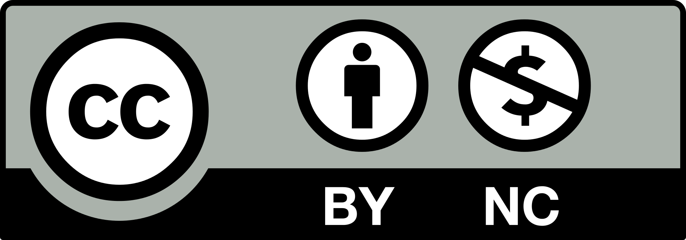

What is the DMP Analyser?
The ReproAI DMP Analyser is a specialized application designed to analyse Data Management Plans (DMPs) using advanced AI techniques. It evaluates text against a checklist of best practices and provides detailed feedback on how to improve the DMP.
How It Works
Our tool uses a modular pipeline architecture that processes the text through several specialized components. Each module leverages state-of-the-art large language models (LLMs) to interpret, evaluate, and summarize the DMP, ensuring nuanced and context-aware assessment at every step.
These components include:
- Metadata Extractor: Identifies metadata from text, such as main title, discipline, and study type.
- Domain Evaluator: Analyzes the text against specific domains of DMP best practices
- Item Evaluator: Evaluates individual checklist items (2-10 per domain)
- Domain Reconciler: Harmonizes evaluations across domains and their items
- Domain Summarizer: Creates concise summaries of each domain's evaluation and the rating
- Feedback Note: Generates a feedback note with actionable recommendations for the author
Features & Capabilities
- Customizable for Any Assessment Framework: Adaptable to various evaluation criteria and standards
- Built-In Data Privacy & Security by Design: Ensures your sensitive research information remains protected
- Integrated Support for Multiple Language Models: Leverages various AI models for comprehensive analysis
- Detailed, Transparent Scoring & Insights: Provides clear feedback with actionable recommendations
- Private, Actionable Feedback for Researchers: Delivers personalized guidance to improve your DMP
- Domain-specific Feedback for Developers: Offers technical insights for implementation
- Simple Text Input Interface: Easy-to-use interface for submitting your DMP text
- Comprehensive Analysis: Thorough evaluation against Finnish DMP criteria
- PDF Export: Download and share your analysis results in PDF format
- Shareable Results: Generate links to share results with colleagues
Our Team
- Juuso Repo, juuso.repo@utu.fi, INVEST Research Flagship Centre, University of Turku
- Johanna Laiho-Kauranne, CSC IT Centre for Science
- Jukka Rantasaari, University of Turku

This work is licensed under a
CC BY-NC 4.0.